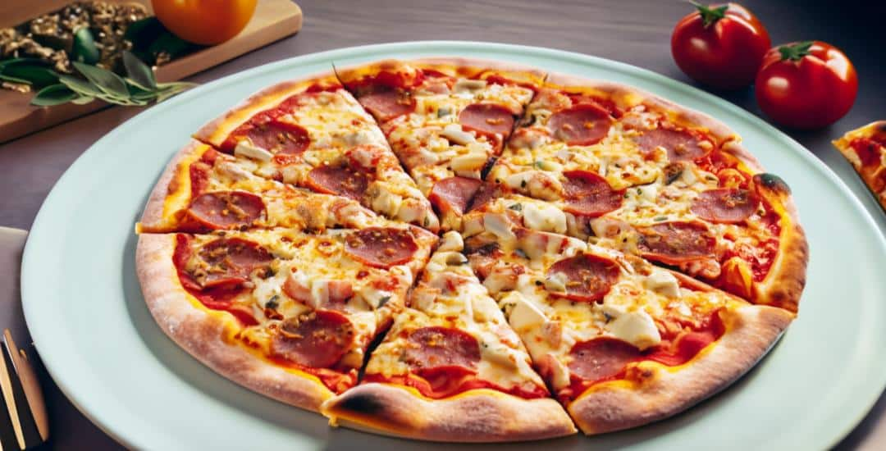

Pizza recipe

"Pizza, a culinary delight beloved worldwide, is an iconic dish that transcends cultural boundaries with its irresistible combination of flavors and textures. Originating from Italy, this circular canvas of culinary creativity has become a global symbol of comfort and indulgence."
Ingredients
- Pizza dough
- Tomato sauce
- Mozzarella cheese
- Fresh tomatoes, sliced
- Fresh basil leaves
- Olive oil
- Garlic, minced
- Pepperoni slices
- Mushrooms, sliced
- Green bell peppers, diced
- Black olives, sliced
- Parmesan cheese, grated
- Oregano (dried or fresh)
- Red pepper flakes (optional)
Steps to make Pizza
- Prepare the Dough:
- Start by rolling out the pizza dough on a floured surface to your desired thickness.
- Spread Tomato Sauce:
- Evenly spread a layer of tomato sauce over the rolled-out dough, leaving a small border around the edges for the crust.
- Add Cheese and Toppings:
- Sprinkle a generous amount of mozzarella cheese over the sauce.
- Layer the pizza with your favorite toppings such as sliced tomatoes, basil leaves, pepperoni, mushrooms, green bell peppers, and black olives.
- Drizzle with Olive Oil:
- Drizzle a bit of olive oil over the pizza for added flavor.
- Season and Garnish:
- Season the pizza with minced garlic, oregano, and grated Parmesan cheese.
- Add red pepper flakes if you like a bit of heat.
- Bake to Perfection:
- Preheat your oven to the recommended temperature for pizza baking.
- Place the pizza in the oven and bake until the crust is golden and the cheese is melted and bubbly.
- Serve and Enjoy:
- Remove the pizza from the oven, let it cool for a few minutes, slice, and serve hot. Enjoy your homemade pizza!